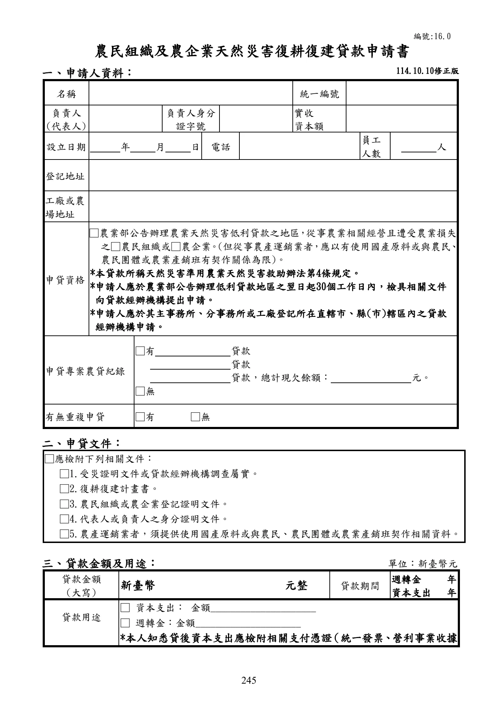
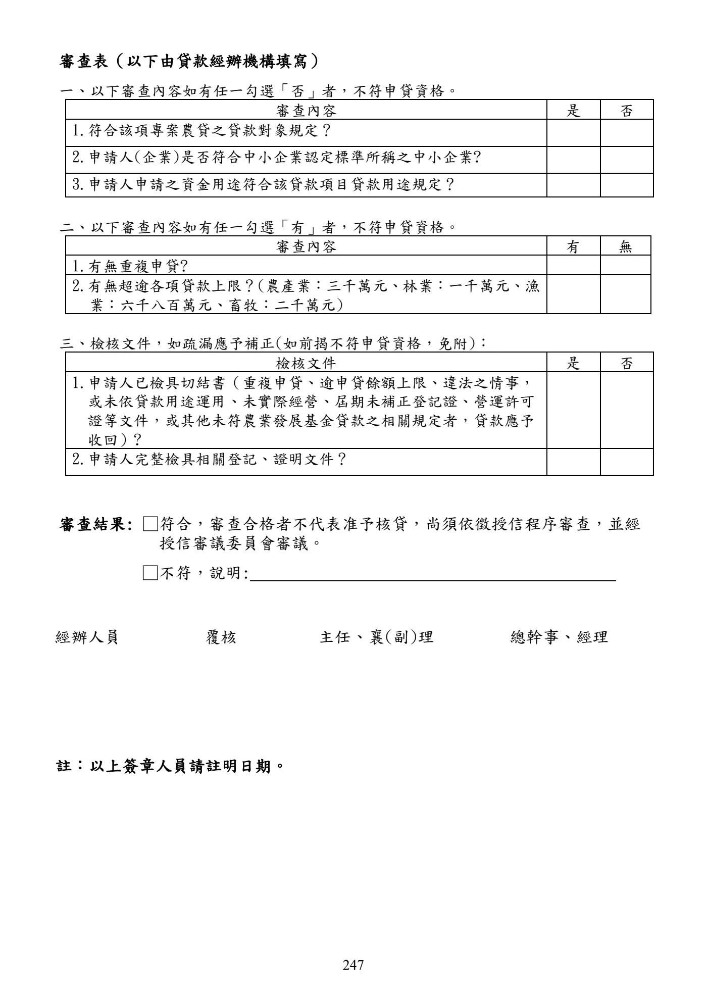

農民組織及農企業天然災害復耕復建貸款
本頁忠實呈現原文，不提供資格摘要、額度摘要、利率摘要或核貸判斷。
手冊頁：242 PDF頁：244／359
農民組織及農企業天然災害復耕復建貸款要點中華民國 103 年 10 月 28 日行政院農業委員會農金字第 1035084025 號令訂定中華民國 104 年 8 月 26 日行政院農業委員會農金字第 1045084368K 號令修正中華民國 105 年 3 月 18 日行政院農業委員會農金字第 1055084021P 號令修正部分規定，並自 105 年 3 月 22 日生效中華民國 109 年 2 月 27 日行政院農業委員會農授金字第 1095084100L 號令修正第 10 點之 1、第 13 點，並自 109 年 3 月 1 日生效中華民國 109 年 10 月 21 日行政院農業委員會農授金字第 1095085177H 號號令修正第 10點之 1、第 13 點、第 16 點規定，並自 109 年 11 月1 日生效中華民國 114 年 9 月 5 日農業部農授金字第 1147467097 號令修正發布第 1、4、6、13點條文；並自 114 年 7 月 7 日生效中華民國 114 年 10 月 9 日農業部農授金字第 1147467209 號令修正第 11 點，並自中華民國 114 年 10 月 10 日生效
一、農業部為協助農民組織及農企業於遭受農業天然災害後，得以儘速復耕復建，特訂定本要點。
二、本貸款除依辦理政策性農業專案貸款辦法辦理外，依本要點規定辦理。本要點未規定者，依農業發展基金貸款作業規範及其他有關規定辦理。
三、本貸款所稱天然災害，準用農業天然災害救助辦法第四條規定。
四、本貸款之對象為天然災害發生後，經農業部依農業天然災害救助辦法第六條規定公告之直轄市或縣(市)，為辦理農業天然災害低利貸款地區，該地區從事農業相關經營之農民組織及農企業，遭受農業損失者。但從事農產運銷業者，應以有使用國產原料或與農民、農民團體或農業產銷班有契作關係為限。
本貸款所稱農民組織，指農會、漁會、農田水利會及合法登記之合作社場；所稱農企業，指符合中小企業認定標準之事業。
五、本貸款用途為農民組織或農企業災後復耕復建之用。
六、本貸款借款人向受災地區直轄市、縣（市）政府、鄉（鎮、市、區）公所、稅捐稽徵機關、貸款經辦機構申請核發農業天然災害受災證明書(下稱受災證明書)、各直轄市、縣（市）政府、鄉（鎮、市、區）公所、稅捐稽徵機關、貸款經辦機構核發受災證明書及借款人向貸款經辦機構申借本貸款之期限，準用農業天然災害救助辦法第十九條規定。
借款人申借本貸款應依前項規定期限內，檢具受災地區直轄市、縣（市）政府、鄉（鎮、市、區）公所、稅捐稽徵機關、貸款經辦機構出具之受災證明書、農業天然災害復耕復建計畫書、農民組織或農企業登記證明文件、其代表人或負責人之身分證明文件及其他貸款應具備文件，向貸款經辦機構提出申請。
七、本貸款之經辦機構如下：
(一) 設有信用部之農(漁)會。
(二) 依法承受農(漁)會信用部之銀行當地分行。
(三) 全國農業金庫。
前項第一款貸款經辦機構不得以內部融資或交互授信方式辦理本貸款。
查看PDF原始文字層
農民組織及農企業天然災害復耕復建貸款要點 中華民國 103 年 10 月 28 日行政院農業委員會農金字第 1035084025 號令訂定 中華民國 104 年 8 月 26 日行政院農業委員會農金字第 1045084368K 號令修正 中華民國 105 年 3 月 18 日行政院農業委員會農金字第 1055084021P 號令修正部分規 定，並自 105 年 3 月 22 日生效 中華民國 109 年 2 月 27 日行政院農業委員會農授金字第 1095084100L 號令修正第 10 點 之 1、第 13 點，並自 109 年 3 月 1 日生效 中華民國 109 年 10 月 21 日行政院農業委員會農授金字第 1095085177H 號號令修正第 10 點之 1、第 13 點、第 16 點規定，並自 109 年 11 月1 日生效 中華民國 114 年 9 月 5 日農業部農授金字第 1147467097 號令修正發布第 1、4、6、13 點條文；並自 114 年 7 月 7 日生效 中華民國 114 年 10 月 9 日農業部農授金字第 1147467209 號令修正第 11 點，並自中華 民國 114 年 10 月 10 日生效 一、 農業部為協助農民組織及農企業於遭受農業天然災害後 ， 得以儘速復耕復建 ， 特訂定 本要點。 二、 本貸款除依辦理政策性農業專案貸款辦法辦理外 ， 依本要點規定辦理 。 本要點未規定 者，依農業發展基金貸款作業規範及其他有關規定辦理。 三、 本貸款所稱天然災害，準用農業天然災害救助辦法第四條規定。 四、 本貸款之對象為天然災害發生後 ， 經農業部依農業天然災害救助辦法第六條規定公告 之直轄市或縣(市)， 為辦理農業天然災害低利貸款地區 ， 該地區從事農業相關經營之 農民組織及農企業，遭受農業損失者。但從事農產運銷業者，應以有使用國產原料或 與農民、農民團體或農業產銷班有契作關係為限。 本貸款所稱農民組織，指農會、漁會、農田水利會及合法登記之合作社場；所稱農企 業，指符合中小企業認定標準之事業。 五、 本貸款用途為農民組織或農企業災後復耕復建之用。 六、 本貸款借款人向受災地區直轄市、縣（市）政府、鄉（鎮、市、區）公所、稅捐稽徵 機關 、 貸款經辦機構申請核發農業天然災害受災證明書(下稱受災證明書)、 各直轄市 、 縣（市）政府、鄉（鎮、市、區）公所、稅捐稽徵機關、貸款經辦機構核發受災證明 書及借款人向貸款經辦機構申借本貸款之期限 ， 準用農業天然災害救助辦法第十九條 規定。 借款人申借本貸款應依前項規定期限內 ， 檢具受災地區直轄市 、 縣 （市） 政府 、 鄉 （鎮 、 市、區）公所、稅捐稽徵機關、貸款經辦機構出具之受災證明書、農業天然災害復耕 復建計畫書 、 農民組織或農企業登記證明文件 、 其代表人或負責人之身分證明文件及 其他貸款應具備文件，向貸款經辦機構提出申請。 七、 本貸款之經辦機構如下： (一) 設有信用部之農(漁)會。 (二) 依法承受農(漁)會信用部之銀行當地分行。 (三) 全國農業金庫。 前項第一款貸款經辦機構不得以內部融資或交互授信方式辦理本貸款。
手冊頁：243 PDF頁：245／359

展開查看PDF原始文字層
前項所稱交互授信，指申貸農(漁)會與經辦農(漁)會有下列情形之一者： (一) 申貸農(漁)會貸予經辦農(漁)會本貸款，而經辦農(漁)會於尚未清償前，對申 貸農(漁)會貸予本貸款。 (二) 申貸農(漁)會對經辦農(漁)會以外之他農(漁)會貸予本貸款，該他農(漁)會又 對經辦農(漁)會貸予本貸款，而經辦農(漁)會於前開貸款尚未清償前，對申貸 農(漁)會貸予本貸款。 (三) 四家以上農(漁)會間有前款接續貸款之情形。 農民組織或農企業向第一項第一款或第二款貸款經辦機構申請本貸款者 ， 應於其主事 務所、分事務所或工廠登記所在直轄市、縣(市)轄區內之貸款經辦機構申辦。 八、 本貸款由貸款經辦機構提供貸款資金 ， 並由農業發展基金就其出資金給予利息差額補 貼。 九、 本貸款風險由貸款經辦機構負擔。 十、 本貸款利率依辦理政策性農業專案貸款辦法相關規定辦理。 十之一、本貸款期限依貸款額度及購置設備耐用年限覈實貸放，其中資本支出最長十年， 週轉金最長五年。 十一、 本貸款每一借款人最高貸款額度如下： (一) 農產業：新臺幣三千萬元。 (二) 林業：新臺幣一千萬元。 (三) 漁業：新臺幣六千八百萬元。 (四) 畜牧：新臺幣二千萬元。 十二、 貸款經辦機構受理申借案件後，應依規定儘速審核。審核結果准予貸放者，應通知 借款人儘速辦理貸款手續。 本貸款由貸款經辦機構按核定金額一次或分次撥付；借款人之貸款用途為農業設 備資本支出者，應檢具相關憑證（統一發票、營利事業收據或進口完稅證明） 。 十三、 本貸款償還方式如下： (一) 資本支出： 1. 本金以每半年一期平均攤還為原則，利息隨同繳付。 2. 本金得酌訂寬緩期限，最長不得超過三年。 (二) 週轉金： 1. 本金以每半年一期平均攤還為原則，利息隨同繳付。 2. 本金得酌訂寬緩期限，最長不得超過二年。 前項本息攤還方式得由借貸雙方以契約另定之。但不得超過 農業部所訂定之最長 期限。 十四、 本貸款擔保方式由貸款經辦機構依其授信有關規定 ， 審酌個別授信案件核定 ； 若借 款人擔保能力不足，貸款經辦機構應協助送請農業信用保證機構保證。 十五、 借款人就同一資金用途不得重複申貸 ， 並應提出切結書載明若有重複申貸之情形 ， 視為違約，由貸款經辦機構收回本貸款。 十六、 本貸款資金應於核准貸款日起三個月內動用完畢，並應用於農業天然災害復耕復 建計畫書上所指定之用途 。 但屬資本支出 ， 應於核准貸款日起三個月內第一次動用 ， 並依工程進度於一年內動用完畢。 借款人確有困難，致工程未能於前項期限內完成者，得向貸款經辦機構申請延長
手冊頁：244 PDF頁：246／359
資本支出貸款之動用期限，最長一年，並以一次為限。
貸款經辦機構受理前項申請，經評估確有必要者，應向全國農業金庫申請變更動用期限。
十七、貸款用途應由貸款經辦機構依下列方式查核與輔導：
(一) 經辦機構應辦理貸款用途查驗工作，並於貸放後三個月內完成查驗報告並作成紀錄。
(二) 借款人未依貸款用途運用者，應由經辦機構督促限期改正，否則視為違約，收回其貸款本息。
(三) 經辦機構於必要時，得會同相關單位辦理農場經營技術指導與資金運用輔導。
查看PDF原始文字層
資本支出貸款之動用期限，最長一年，並以一次為限。 貸款經辦機構受理前項申請，經評估確有必要者，應向全國農業金庫申請變更動 用期限。 十七、 貸款用途應由貸款經辦機構依下列方式查核與輔導： (一) 經辦機構應辦理貸款用途查驗工作，並於貸放後三個月內完成查驗報告並作 成紀錄。 (二) 借款人未依貸款用途運用者 ， 應由經辦機構督促限期改正 ， 否則視為違約 ， 收 回其貸款本息。 (三) 經辦機構於必要時 ， 得會同相關單位辦理農場經營技術指導與資金運用輔導 。
手冊頁：245 PDF頁：247／359
{kind=link}

展開查看PDF原始文字層
農民組織及農企業天然災害復耕復建貸款申請書
一、申請人資料：
名稱 統一編號
負責人
(代表人)
負責人身分
證字號
實收
資本額
設立日期 年 月 日 電話 員工
人數 人
登記地址
工廠或農
場地址
申貸資格
□農業部公告辦理農業天然災害低利貸款之地區 ， 從事農業相關經營且遭受農業損失
之□農民組織或□農企業 。(但從事農產運銷業者 ， 應以有使用國產原料或與農民 、
農民團體或農業產銷班有契作關係為限)。
*本貸款所稱天然災害準用農業天然災害救助辦法第4條規定。
*申請人應於農業部公告辦理低利貸款地區之翌日起30個工作日內，檢具相關文件
向貸款經辦機構提出申請。
*申請人應於其主事務所、分事務所或工廠登記所在直轄市、縣(市)轄區內之貸款
經辦機構申請。
申貸專案農貸紀錄
□有 貸款
貸款
貸款，總計現欠餘額： 元。
□無
有無重複申貸 □有 □無
二、申貸文件：
□應檢附下列相關文件：
□1.受災證明文件或貸款經辦機構調查屬實。
□2.復耕復建計畫書。
□3.農民組織或農企業登記證明文件。
□4.代表人或負責人之身分證明文件。
□5.農產運銷業者，須提供使用國產原料或與農民、農民團體或農業產銷班契作相關資料。
三、貸款金額及用途： 單位：新臺幣元
貸款金額
(大寫) 新臺幣 元整 貸款期間 週轉金 年
資本支出 年
貸款用途
□ 資本支出： 金額_____________________
□ 週轉金：金額_____________________
*本人知悉貸後資本支出應檢附相關支付憑證 （統一發票 、 營利事業收據
114.10.10修正版
編號:16.0手冊頁：246 PDF頁：248／359
或進口完稅證明），以佐證貸款用途。
申請人(簽章)：_____________________敬請惠予核貸為荷此致貸款經辦機構申請人(簽章)：中華民國年月日
備註：其他徵授信資料請依貸款經辦機構相關規定辦理。
查看PDF原始文字層
或進口完稅證明） ，以佐證貸款用途。 申請人(簽章)：_____________________ 敬請 惠予核貸為荷 此致 貸款經辦機構 申請人(簽章)： 中 華 民 國 年 月 日 備註：其他徵授信資料請依貸款經辦機構相關規定辦理。
手冊頁：247 PDF頁：249／359
{kind=link}

展開查看PDF原始文字層
審查表（以下由貸款經辦機構填寫） 一、以下審查內容如有任一勾選「否」者，不符申貸資格。 審查內容 是 否 1.符合該項專案農貸之貸款對象規定？ 2.申請人(企業)是否符合中小企業認定標準所稱之中小企業? 3.申請人申請之資金用途符合該貸款項目貸款用途規定？ 二、以下審查內容如有任一勾選「有」者，不符申貸資格。 審查內容 有 無 1.有無重複申貸? 2.有無超逾各項貸款上限？(農產業：三千萬元、林業：一千萬元、漁 業：六千八百萬元、畜牧：二千萬元) 三、檢核文件，如疏漏應予補正(如前揭不符申貸資格，免附)： 檢核文件 是 否 1.申請人已檢具切結書（重複申貸、逾申貸餘額上限、違法之情事， 或未依貸款用途運用、未實際經營、屆期未補正登記證、營運許可 證等文件，或其他未符農業發展基金貸款之相關規定者，貸款應予 收回）? 2.申請人完整檢具相關登記、證明文件？ 審查結果: □符合，審查合格者不代表准予核貸，尚須依徵授信程序審查，並經 授信審議委員會審議。 □不符，說明: 經辦人員 覆核 主任、襄(副)理 總幹事、經理 註：以上簽章人員請註明日期。
手冊頁：248 PDF頁：250／359
農業天然災害復耕復建計畫書（農民組織及農企業天然災害復耕復建貸款專用）
105.3.22 修正版
一、申請人基本資料名稱統一編號負責人(代表人)負責人身分證字號實收資本額
設立日期年月日電話員工人數人登記地址工廠或農場地址
二、復耕復建項目之資金需要情形項目數量單價(元)需要資金(千元)自籌資金(千元)貸款資金(千元) 需款時間
合計
三、還款來源(以借款期間估算)項目數量單價(元) 資金(千元) 出售時間備註年月/年月/年月年月/年月/年月
年月/年月/年月年月/年月/年月
年月/年月/年月年月/年月/年月
年月/年月/年月年月/年月/年月
年月/年月/年月年月/年月/年月
年月/年月/年月年月/年月/年月
合計
申請人簽章：申請日期：年月日
編號:16.1
查看PDF原始文字層
農業天然災害復耕復建計畫書
（農民組織及農企業天然災害復耕復建貸款專用）
105.3.22 修正版
一、申請人基本資料
名稱 統一編號
負責人
(代表人)
負責人
身分證字號 實收
資本額
設立日期 年 月 日 電話 員工人數 人
登記地址
工廠或
農場地址
二、復耕復建項目之資金需要情形
項目 數量 單價
(元)
需要資金
(千元)
自籌資金
(千元)
貸款資金
(千元) 需款時間
合 計
三、還款來源(以借款期間估算)
項目 數量 單價(元) 資金(千元) 出售時間 備註
年 月/ 年 月/ 年 月
年 月/ 年 月/ 年 月
年 月/ 年 月/ 年 月
年 月/ 年 月/ 年 月
年 月/ 年 月/ 年 月
年 月/ 年 月/ 年 月
年 月/ 年 月/ 年 月
年 月/ 年 月/ 年 月
年 月/ 年 月/ 年 月
年 月/ 年 月/ 年 月
年 月/ 年 月/ 年 月
年 月/ 年 月/ 年 月
合 計
申請人簽章： 申請日期： 年 月 日
編號:16.1手冊頁：249 PDF頁：251／359
農業天然災害受災證明書(申貸「農民組織及農企業天然災害復耕復建貸款」專用)
一、基本資料(請申請人填寫)災害名稱申請日期年月日名稱統一編號住址電話受災土地座落區段地號持分經營面積、體積(公頃、立方公尺)
受災漁船船名船舶登記日期噸位主機種類
二、損失情形(請調查人員填寫，損失情形以現場勘查為原則，如依個案事實足以判斷其災損情形者，得逕予填寫，並留存相關照片或書表文件附卷)項目損失情形類別名稱(請填寫)面積或數量(公頃、公噸、坪、艘、隻等)農產業□稻米□雜糧□果樹□花卉□菇類□蔬菜□特用作物 □養蜂(□蜂箱□蜂群)□農作物育苗作業室 □塑膠布溫網室(□結構型鋼骨溫網室 □簡易式塑膠布溫網室 )□水平棚架網室 □菇舍(□傳統式 □鋼構型)□洋蔥苗圃 □製茶設備設施□溫網室以外之農業設施□糧食倉庫【□平倉□筒倉(含周邊設施)□濕穀集運、烘乾、碾米設備設施】
漁業【漁塭養殖】□鰻魚(鰻鱺屬)□龍膽石斑□石斑（除龍膽石斑外其他石斑類）□海水鯛（含笛鯛科）□午仔魚□鱸魚類□烏魚□文蛤養殖池混養工作魚□ 其他養殖種類(除養殖貝類外)□文蛤□九孔□淡菜□其他養殖貝類□觀賞魚室外魚塭□室內養殖及其生產或管理設施 □室外養殖管理設施□水產品初級加工、集貨包裝處理設施□發電機□龍鬚菜養殖
【海上箱網養殖】□網具□養殖魚類
【牡蠣養殖】□平掛式□插篊式□浮筏式□延繩垂下式□棚架垂下式
【定置網漁網】□大型定置網類(□全毀整組換新/重佈□半毀部分修復/重佈)□其他定置網類
114.9.5 修正版(適用於 114.7.7 以後發生之天然災害
查看PDF原始文字層
農業天然災害受災證明書(申貸「農民組織及農企業天然災害復耕 復建貸款」專用) 一、基本資料(請申請人填寫) 災 害 名 稱 申 請 日 期 年 月 日 名 稱 統一編號 住 址 電 話 受災土地座落區段 地號 持分 經營面積、體積 (公頃、立方公尺) 受災漁船船名 船舶登記日期 噸位 主機種類 二、損失情形(請調查人員填寫，損失情形以現場勘查為原則，如依個案事實足以判 斷其災損情形者，得逕予填寫，並留存相關照片或書表文件附卷) 項目 損失情形 類別 名稱 (請填 寫) 面積或數量 (公頃、公噸、坪、 艘、隻等) 農 產 業 □稻米□雜糧□果樹□花卉□菇類□蔬菜□特用作物 □ 養蜂(□蜂箱□蜂群)□農作物育苗作業室 □塑膠布溫網 室(□結構型鋼骨溫網室 □簡易式塑膠布溫網室 )□水平 棚架網室 □菇舍(□傳統式 □鋼構型)□洋蔥苗圃 □製茶 設備設施□溫網室以外之農業設施□糧食倉庫 【□平倉□ 筒倉(含周邊設施)□濕穀集運、烘乾、碾米設備設施】 漁 業 【漁塭養殖】 □鰻魚(鰻鱺屬)□龍膽石斑□石斑 （除龍膽石斑外其他石 斑類）□海水鯛（含笛鯛科）□午仔魚□鱸魚類□烏魚□ 文 蛤 養 殖 池 混養工 作 魚□ 其 他養殖 種 類(除 養 殖 貝類 外)□文蛤□九孔□淡菜□其他養殖貝類□觀賞魚室外魚 塭□室內養殖及其生產或管理設施 □室外養殖管理設施 □水產品初級加工 、 集貨包裝處理設施□發電機□龍鬚菜 養殖 【海上箱網養殖】 □網具□養殖魚類 【牡蠣養殖】 □平掛式□插篊式□浮筏式□延繩垂下式□棚架垂下式 【定置網漁網】 □大型定置網類(□全毀整組換新/重佈□半毀部分修復/ 重佈)□其他定置網類 114.9.5 修正版 (適用於 114.7.7 以後 發生之天然災害
手冊頁：250 PDF頁：252／359
【在漁港區域漁船】□全毀(新建漁船，含舢舨)□半毀(修復漁船，含舢舨)【在漁港區域漁筏】□全毀(新建漁筏)□半毀(修復漁筏)畜牧【家畜】□豬□牛□羊□鹿□馬□兔【家禽】□雞□鴨□鵝□火雞□鴕鳥(人工飼養)□鵪鶉□牧草【畜禽舍】□傳統式□水簾式、樓房式【堆肥舍】□傳統式□鋼筋結構堆肥舍【設施設備】□飼料散裝桶 □自動給料(水)設備□污染防治設施 □貯乳槽□貯水槽□孵化設備林業□造林地□林業苗圃□竹類【林下經濟申請核准經營項目】□段木香菇與木耳□臺灣金線連□森林蜂產品(□蜂箱□蜂群)□臺灣山茶□馬藍□天仙果□森林副產物-竹筍(森林法施行細則第三條規定之林地生產竹筍之部分)調查員簽章 (簽名或用印)勘查日期年月日核發日期年月日出具證明機關單位__________________________鄉(鎮、市、區)公所(請蓋關防)或林業及自然保育署__________分署___________工作站(請蓋關防)
備註：申請人申請「農民組織及農企業天然災害復耕復建貸款」，應於本證明書核發之翌日起30個工作日內，檢具本證明書、農業天然災害復耕復建計畫書、農民組織或農企業登記證明文件、其代表人或負責人之身分證明文件及其他貸款應具備文件，向貸款經辦機構提出申請。
查看PDF原始文字層
【在漁港區域漁船】 □全毀(新建漁船，含舢舨)□半毀(修復漁船，含舢舨) 【在漁港區域漁筏】 □全毀(新建漁筏)□半毀(修復漁筏) 畜 牧 【家畜】 □豬□牛□羊□鹿□馬□兔 【家禽】 □雞□鴨□鵝□火雞□鴕鳥(人工飼養)□鵪鶉 □牧草 【畜禽舍】 □傳統式□水簾式、樓房式 【堆肥舍】 □傳統式□鋼筋結構堆肥舍 【設施設備】 □飼料散裝桶 □自動給料(水)設備□污染防治設施 □貯 乳槽□貯水槽□孵化設備 林 業 □造林地 □林業苗圃 □竹類 【林下經濟申請核准經營項目】 □段木香菇與木耳□臺灣金線連□森林蜂產品(□蜂箱□ 蜂群)□臺灣山茶□馬藍□天仙果 □森林副產物-竹筍(森林法施行細則第三條規定之林地 生產竹筍之部分) 調查員簽章 (簽名或用印) 勘查日期 年 月 日 核發日期 年 月 日 出具證明 機關單位 __________________________鄉(鎮、市、區)公所(請蓋關防) 或林業及自然保育署__________分署___________工作站(請蓋關防) 備註：申請人申請「農民組織及農企業天然災害復耕復建貸款」 ，應於本證明書核發 之翌日起30個工作日內 ， 檢具本證明書、農業天然災害復耕復建計畫書 、 農民 組織或農企業登記證明文件、其代表人或負責人之身分證明文件及其他貸款 應具備文件，向貸款經辦機構提出申請。